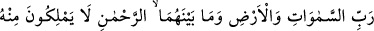

hazfedilmiş ve isim mansub olmuştur.
Mârifet ehli birisi şöyle diyor: Allah’tan gelen mükâfâtın nihâyeti olmadığına göre bu,
kulun ameli mikdarınca olmayacaktır. Tam tersine amelin çok üstünde olacaktır. Çünkü
hadd ve nihâyeti olmayandan gelen bağışın hadd ve nihâyeti olmaz.
Bâzıları şöyle der: Allah’tan gelen bağış bir mükâfât yerinde değil bir ihsan
mesâbesindedir. Âyetteki “cezâ” kulun işlediği amellere karşılık, “atâ” ise Allah’tan
kula verilen bir hibedir ve bu hibeye kendi yurdunun ehlinden olan havas kimseler sâhip
olabilir.
et-Te’vilâtü’n-Necmiyye’de bu âyetler şöyle tefsir olunmaktadır: “Şüphesiz takvâ
sahipleri için” yâni Allah Teâlâ, O’nun sıfat ve isimleri sâyesinde kapkaranlık
nefislerinden sakınanlar için “kurtuluşa erme”; yâni Allah’ı ve O’nun sıfatlarını elde
etme, “bahçeler”; yâni Allah’ı tenzih eden kalplerin topraklarına âid bahçeler, “üzüm
bağları” yâni muhabbet-i zâtî şarabının üzümlerini veren hakikat ve mânâ ağaçları
vardır. Ki bu üzümden yapılan muhabbet-i zâti şarabı, akıl gözünü başkalarını ve
Allah’tan başkalığı görmesine engel olmak için örter. Yine onlar için “göğüsleri
tomurcuk gibi kabarmış yaşıt kızlar” yâni letâif ve maârif bâkireleri olan göğüsleri
tomurcuk gibi kabarmış yaşıt kızlar, “içki dolu kaseler” yâni muhabbet ve mârifet
şarabından doldurulmuş kadehler vardır. “Orada boş lakırdılar” yâni nefsani
düşüncelerinden boş sözler “ve yalan söz “ yâni şeytani vesveselerden olan yalan söz
işitmezler. “Bunlar Rabbinin yeterli bir bağışı, mükâfâtıdır”; yâni bunlar senin hiçbir
amelin olmadığı halde Rabbinden tam bir bağış ve ihsanıdır.
Kâşânî ise bu âyetlere şöyle mânâ vermektedir: Fiillerinde şeriat ve aklın çizmiş
olduğu adalet sınırını aşan azgınlara karşılık müttakiler için -bunlar ahlaksızlıklardan ve
kötü fiillerden uzak duran kimselerdir- kurtuluş ve azgınların dönecek oldukları
cehennemden uzak kalış vardır. Bunlar için ahlak cennetlerinden bahçeler, fiil ve hey’et
meyvelerinden üzümler, ef’al cennetinde aynı tertibte esma âsârının sûretlerinden
göğüsleri tomurcuk gibi kabarmış yaşıt kızlar, âsâr muhabbeti lezzetinden zencefil ve
kâfûr karıştırılmış dolu dolu kadehler vardır. Çünkü âsâr ve ef’al cennetinde
bulunanların bunların dışındakilere tamah ve arzuları yoktur. Çünkü o hâriçte kalanlar
âsâra dalıp müessirden, atâ; yâni bağışa dalıp mu’ti’den mahrum olan kimselerdir.
Kendilerine verilen bu bağış yeterli olup kendi himmetleri ve gözlerinin tamahı
mikdarındadır. Çünkü onlar istidadlarındaki noksanlıktan dolayı bundan daha ötesini
arzulamazlar. Onların içinde bulundukları durumdan aldıkları zevklerine göre bundan
daha lezzetlisi yoktur.